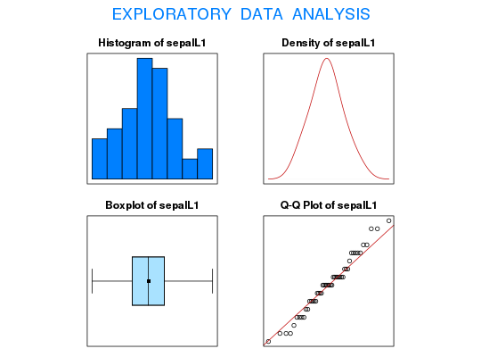

Data for Exercises 1.15 and 5.19
A data frame with 150 observations on the following 14 variables.
Kitchens, L. J. (2003) Basic Statistics and Data Analysis. Duxbury
str(Irises)#> 'data.frame': 150 obs. of 14 variables: #> $ sepalL1 : num 5.1 4.9 4.7 4.6 5 5.4 4.6 5 4.4 4.9 ... #> $ sepalW1 : num 3.5 3 3.2 3.1 3.6 3.9 3.4 3.4 2.9 3.1 ... #> $ petalL1 : num 1.4 1.4 1.3 1.5 1.4 1.7 1.4 1.5 1.4 1.5 ... #> $ petalW1 : num 0.2 0.2 0.2 0.2 0.2 0.4 0.3 0.2 0.2 0.1 ... #> $ sepalL2 : num 7 6.4 6.9 5.5 6.5 5.7 6.3 4.9 6.6 5.2 ... #> $ sepalW2 : num 3.2 3.2 3.1 2.3 2.8 2.8 3.3 2.4 2.9 2.7 ... #> $ petalL2 : num 4.7 4.5 4.9 4 4.6 4.5 4.7 3.3 4.6 3.9 ... #> $ peatalW2: num 1.4 1.5 1.5 1.3 1.5 1.3 1.6 1 1.3 1.4 ... #> $ sepalL3 : num 6.3 5.8 7.1 6.3 6.5 7.6 4.9 7.3 6.7 7.2 ... #> $ sepalW3 : num 3.3 2.7 3 2.9 3 3 2.5 2.9 2.5 3.6 ... #> $ petalL3 : num 6 5.1 5.9 5.6 5.8 6.6 4.5 6.3 5.8 6.1 ... #> $ petalW3 : num 2.5 1.9 2.1 1.8 2.2 2.1 1.7 1.8 1.8 2.5 ... #> $ sepalL : num 5.1 4.9 4.7 4.6 5 5.4 4.6 5 4.4 4.9 ... #> $ sample : int 1 1 1 1 1 1 1 1 1 1 ... #>#> [1] "sepalL1" #>#> Size (n) Missing Minimum 1st Qu Mean Median TrMean 3rd Qu #> 50.000 100.000 4.300 4.800 5.006 5.000 5.002 5.200 #> Max. Stdev. Var. SE Mean I.Q.R. Range Kurtosis Skewness #> 5.800 0.352 0.124 0.050 0.400 1.500 -0.451 0.113 #> SW p-val #> 0.460 #>t.test(sepalL1,conf.level=.99)$conf#> [1] 4.872406 5.139594 #> attr(,"conf.level") #> [1] 0.99 #>detach(Irises)